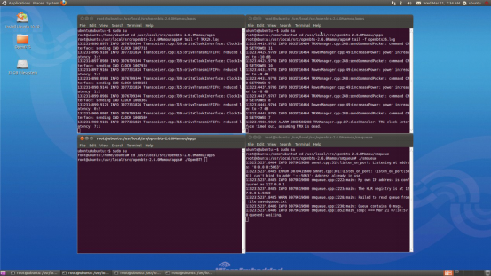
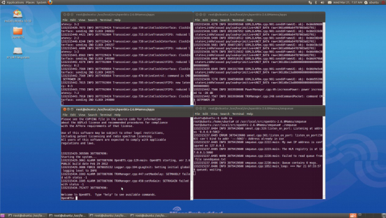
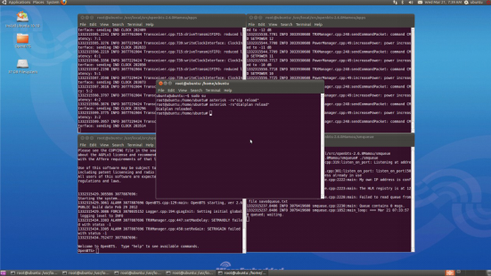
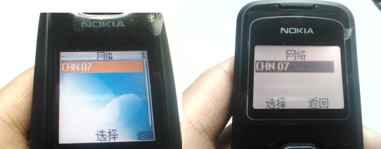
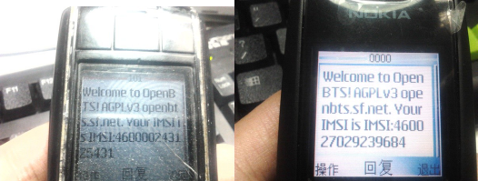
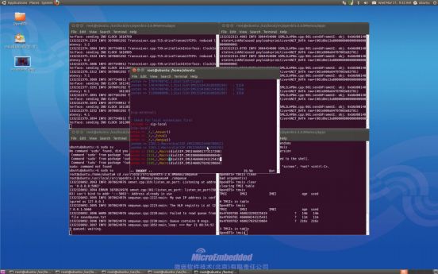
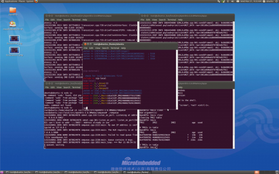
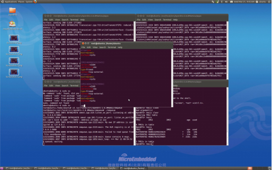
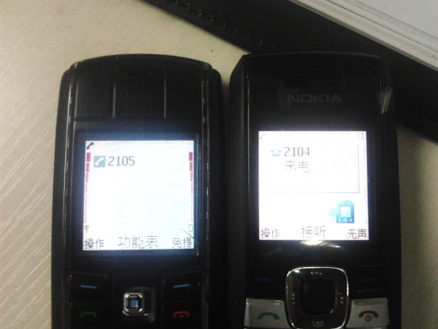

USRP 搭建的基站实例
需要：装有 OpenBTS liveDVD 光盘 Ubuntu 系统的计算机、usrp 64M 母版及先关 子板、旧时手机两个、手机卡两张。
1、进入 Ubuntu 系统，在桌面上打开四个终端 Terminal 在 Terminal1 依次运行：
[sudo su]
[cd /usr/local/src/openbts_2.6Mamou/apps]
[Tail –f TRX26.log]
在 Terminal2 中依次运行： [sudo su]
[cd /usr/local/src/openbts_2.6Mamou/apps] [Tail –f openbts26.log]
在 Terminal3 中依次运行： [sudo su]
[cd /usr/local/src/openbts_2.6Mamou/smqueue] [./smqueue]
在 Terminal4 中依次运行： [sudo su]
[cd /usr/local/src/openbts_2.6Mamou/apps] [./OpenBTS]
如下图所示：

运行结果如下：

2、打开第 5 个终端，重载 asterisk 关于 openbts 的配置文件，依次运行：
sudo su
asterisk –rx ＂sip reload＂
asterisk –rx ＂dialplan reload＂

3、将手机卡装入手机，打开手机手动搜索网络，搜索到 CHN 07（CHN 07 为本光 盘所设定的基站）并连接。

4、连接 CHN 07 会受到平台收到的短信，如下图所示：

短信中显示了手机卡的 IMSI 号码。
5、配置 asterisk 文件给手机卡定义号码；
例如：将 ISMI:460000243125431 定义为 2104；
将 ISMI:460027029239684 定义为 2105；
（定义号码时位数不限）
（1）在第 5 个终端中输入：vim /etc/asterisk/extensions.conf 出现如下画面：

敲击键盘＂I＂键，将其中两行改为手机卡的信息，即：
exten => 2104,1,Macro(dialSIP,IMSI460000243125431) exten => 2105,1,Macro(dialSIP,IMSI460027029239684)
输入:wq 保存退出：

（2）在第 5 个终端中继续输入：vim /etc/asterisk/sip.conf
在出现的窗口中继续修改相应信息，并保存退出：

（3）再次重载关于 asterisk 的配置文件：
（4）平台搭建完成，可以拨打电话了：

TIPS:
1、当用户使用光驱启动模式下要注意，对系统及源代码的改动需要备份到移动 设备或本地硬盘，不然会在重启后消失，因为光盘不能保存数据。关于 linux 中 的的具体操作请参考相关文献。
2、在 linux 下对硬件的直接操作需要管理员权限，所以在运行所有指令之前，请 输入 sudo su，并输入密码获得 root 权限。
3、基站实例中由于实验平台的稳定性问题，在搜索基站信号和拨打电话时请多 次尝试，如需帮组请及时与我们联系 http://www.microembedded.com。